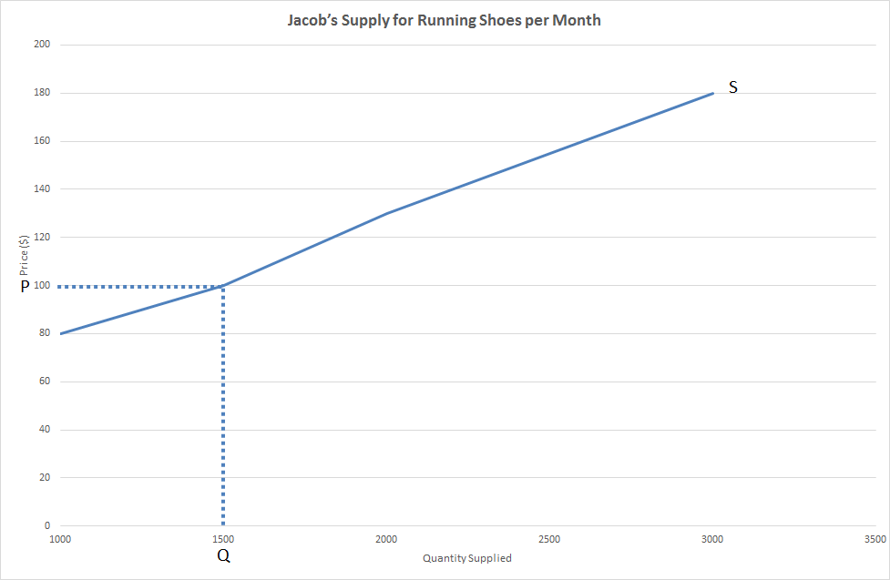
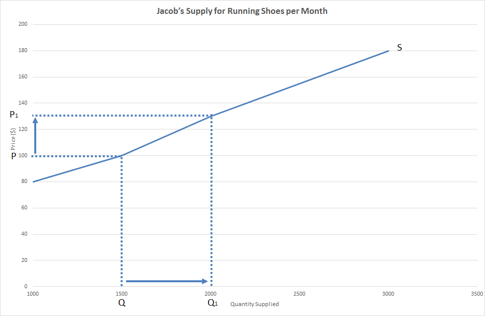
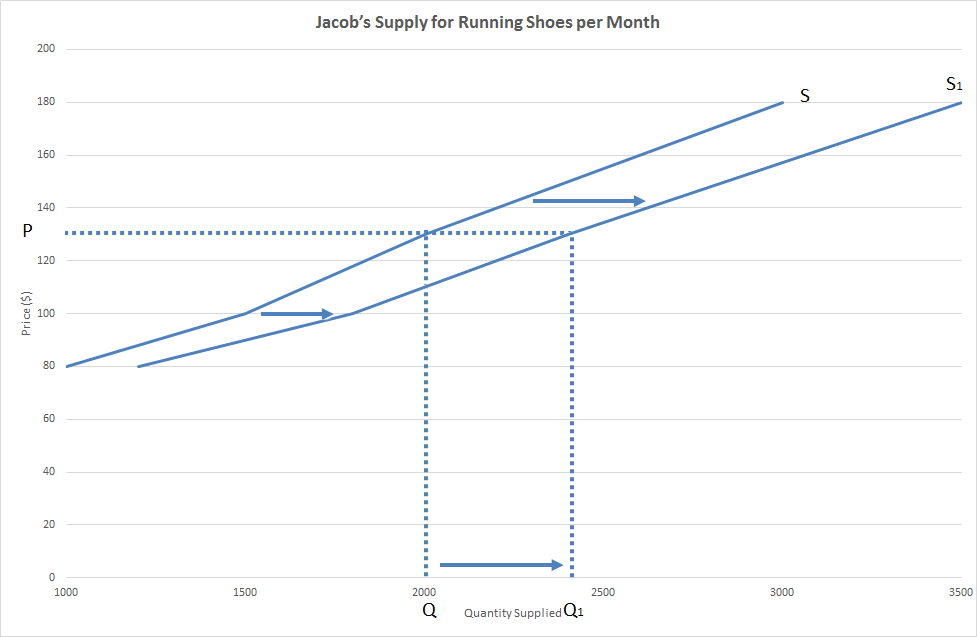

Law of Supply
Supply is the willingness and ability for a producers to sell a good or service at different price levels, this means that the producer has to want to sell the product and they also have to be able to pay for the production before there is any supply for it. This idea leads to the Law of Supply which states: As price increases quantity supplied increases, ceteris paribus. These factors will be covered later. From this we can construct an example table of what someone’s supply for a product may look like:
| Jacob’s Supply for Running Shoes per Month | |
|---|---|
| Price ($ per pair of shoes) | Number of pairs of shoes |
| 80 | 1000 |
| 100 | 1500 |
| 130 | 2000 |
| 180 | 3000 |
As we can see from this as the price of the shoes go up, the quantity supplied goes up as we would expect.
Supply Curve
A supply curve is a simple way of displaying the supply for a good or service, if we continue with the example above it would look like this:
{kind=link}
As we can see from above, if the price was at $100 then the quantity supplied would be 1500 pairs of shoes per month. The upwards direction of the curve reflects the Law of Supply. We can also use a supply curve to demonstrate the effect of a change in price on the quantity supplied.
{kind=link}
As we can see here, when the price of pairs of shoes increases from $100 to $120 the quantitly supplied rises from 1500 lessons to 2000 lessons per month. This is because, as the The Law of Supply states, when price increases quantity supplied increases, ceteris paribus. This is reflected in the graph as when the price increase from $100 to $120 the quantity supplied by Jacob increased from 1500 to 2000 lessons per month. This is because they are now more profitable so Jacob is now both willing and able to sell more pairs of shoes.
Shifting Supply Curve
At the end of the Law of Supply we say ceteris paribus, this means assuming all other factors remain the same. However, if another factor is affected, this will have an effect on our supply curve, namely, it will shift the supply curve to the right or the left. There are 4 main factors that will shift the supply curve:
- Change in cost of production – changes in cost of production effect the profit that a producer gets from their products, if costs of production increase this will decrease supply as the product is now less profitable and as costs of production decrease this will increases supply as the product is now more profitable
- Change in price of alternative goods – an alternative good is a good that can be produces using the same or similar resources as another good i.e. potato production is an alternative good to carrot production, if the price of an alternative good decreases this will increase supply as the product is now relatively more profitable and if the price of an alternative good ingresses this will decrease supply as the product is now relatively less profitable
- Change in productivity – productivity is the efficiency at which resources are being used in the production process, if productivity increases this will increase supply as the product is now more profitable and if productivity decreases this will decrease supply as the product is now less profitable
- Technology – this one comes under the productivity section for the most part and is really anything to do with technology that can affect production, if new technology is introduces this will increase supply as the product is now more profitable and if technology breaks this will decrease supply as the product is now less profitable
If we go back to Jacob and his pairs of shoes we can get an example of this. Let’s say that Jacob introduces new technology into his work shop, this will increase Jacobs supply of pairs of shoes as there is a productivity increase.
| Jacob’s Supply for Running Shoes per Month | ||
|---|---|---|
| Price ($ per pair of shoes) | Number of pairs of shoes before new technology | Number of pairs of shoes after new technology |
| 80 | 1000 | 1200 |
| 100 | 1500 | 1800 |
| 130 | 2000 | 2400 |
| 180 | 3000 | 3500 |
From this we can create a graph that shows this decrease in supply and it would look like this:
{kind=link}
As we can see, due to the increase in productivity there is an increase in supply at each and every price point because shoes are now more profitable to produce. As a result, at the price point of $130 Jacob’s supply will rise from 2000 pairs of shoes per month to 2400 pairs of shoes per month.